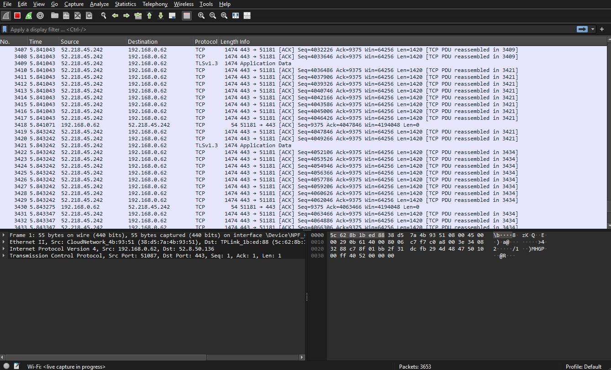
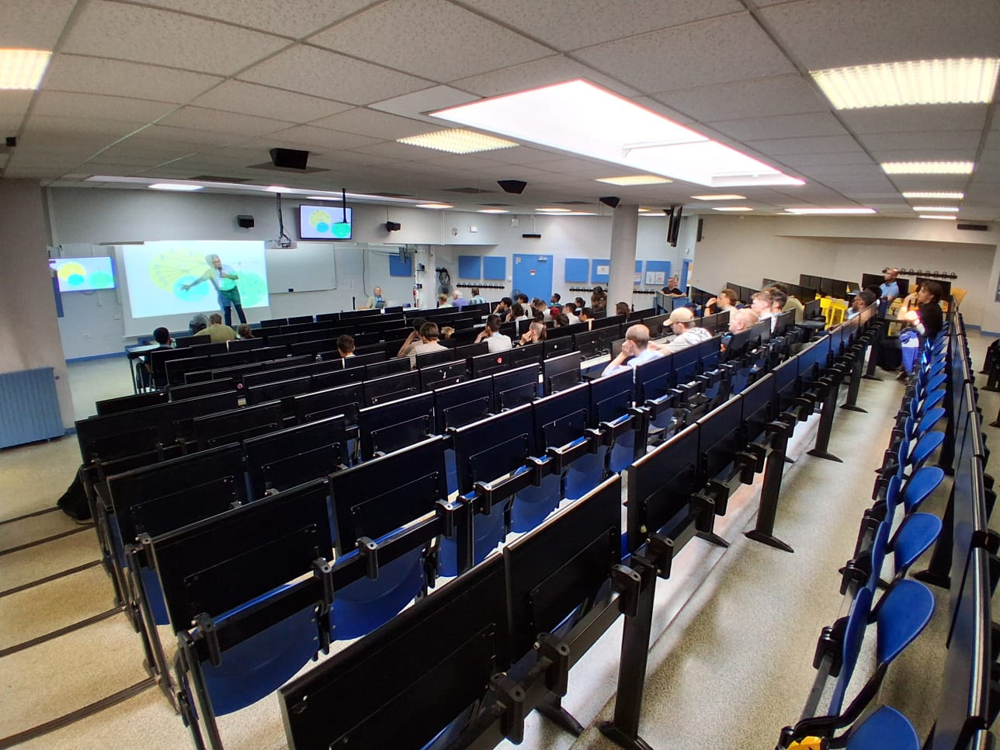
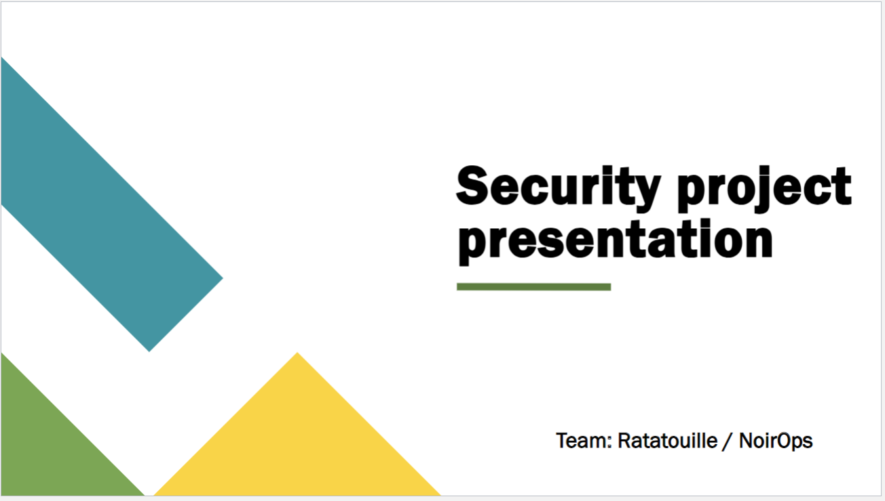
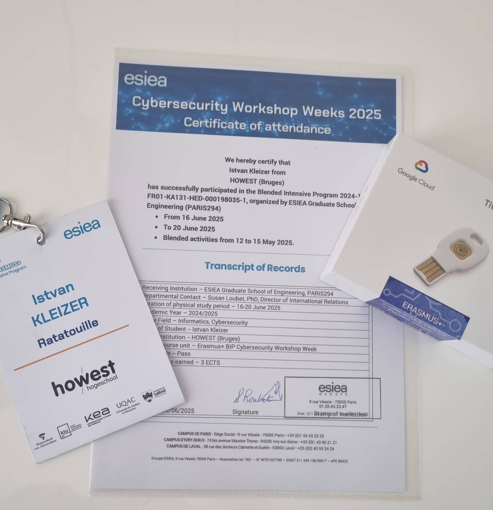

Cyber Security Workshop Week Paris
First day: Introduction and beginning of the work

On the first day we received a briefing about the BIP. They explained what they are expecting us to do. In short version: there will be villages which will represent different aspects of cybersecurity. We will be divided into groups and each group will have to visit all villages and complete tasks in them. After this we immediately started the work. (going to villages and complete the tasks) On this day we visited the OSINT/Social Engineering and the Mobile phone security villages. Where we learnt about how to identify and create Phising emails, and how to search and find malicious code inside a mobil app. Between the the village we had a delicious lunch in form of sandwiches. At the end of the day, randomly have been selected a group to summarize the day. An another small note, our team was a little few in numbers, because some of our team members did not show up. So we had to team up with an another group which had the exact same problem.
Second day: Digital Forensics and Network security
On the second day we worked with different forensics tools for both the first and second village. With Autopsy, Registry viewer, FTK Imager and similar tools we learned how to extract artifacts from a computer and how to analyze them. Now for the differences between the two village. On the Digital forensics village the hands on tasks were focused on analyzing a computer image as HDD, Registry hives, and RAMs. On the Network village we first learned about the importance of segmentation and other useful network security concepts. For the hands on part we mostly analyzed network traffic using Wireshark. Again, between the villages we had a delicious lunch, this time in form of fresh mixed bowls. At the end of the day, randomly have been selected a group to summarize the day.
Third day: Governance and lockpicking
This day started a little different then the rest, because we had to go to a different location. From now on we were working inside the new bulding of the BIP. The first village was about Governance, where we learned about the importance of policies and procedures in cybersecurity. We also learned about the different roles and responsibilities within an organization. The second village was about lockpicking, where we learned about physical security and how to bypass locks. We had the opportunity to practice our lockpicking skills on various types of locks. Between the villages we had a delicious lunch, this time in form of sandwiches again. At the end of the day, randomly have been selected a group to summarize the day. And as luck would have it, it was our group that had to present the summary. We presented our summary in front of the whole group, which was a great experience for us.
Fourth day: Group work and preparing for presentation
In this last two days of our stay we were asked to finish a special assignment which were a complicated task which included every type of village we visited. We had to work in groups and prepare a presentation about our findings and experiences during this two last day. We had to analyze the data we collected and present it in a clear manner. This was a great opportunity for us to apply what we learned during the week and to work as a team. But it would not be this easy, because of course I had to take an exam just before the presentation. So I had to study for the exam and prepare for the presentation at the same time. It was a special experience for me, because I had to manage my time and prioritize my tasks. Luckly the sandwiches were delicious and gave me the energy I needed to finish everything on time.
Fifth day: Presentation time!
As the last day begin of this wonderful experience, I headed to a different room then the rest of my group. Me and a friend of my were headed to the exam room. Just moments later, the exam started. It was a difficult exam, but I managed to finish it on time. At least that what I was thinking, but then I realized that my team already started the presentation without me. I rushed to the room where they were presenting and joined them. Needed a moment to gather myself, and catch up with the presentation. But luckily, I managed to do it and we finished the presentation successfully. At the end of the day everyone was gathered in the main room, where the organizers thanked us for our participation and gave us a certificate of completion. Other than that, the organizers announced the winners of the BIP, and suprisingly our group won the second place! We were very happy and proud of ourselves.